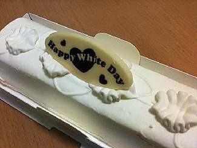

Борис Акунин
Мой календарь
Крадем хороший праздник у японцев. 14 марта они отмечают «Белый день». Ровно месяц назад, в день Святого Валентина, в Японии подарки мальчикам дарили девочки. Сегодня мальчики отдариваются.
И, поскольку японцы не любят двусмысленных ситуаций, всегда поясняется, какой это подарок - любовный («хоммэй-тёко», «подношение истинного чувства») или просто вежливый («гири-тёко», «подношение долга [вежливости]»). Второе - для соученика или коллеги.
Я помню, как однажды, много лет назад, когда я учился в Японии, ко мне в кампусе подошла совершенно незнакомая девушка, вручила шоколадку и сказала: «Это хоммэй-тёко», повернулась и ушла. Если бы я месяц спустя тоже что-нибудь ей подарил, это означало бы начало отношений, но я тогда, увы, понятия не имел об этой традиции. А девушка была прехорошенькая…
«Белым» день называется, потому что валентинки, как правило шоколадные, то есть темные. Четырнадцатого же марта нужно дарить только белое. Лучше всего белый зефир, если шоколад - разумеется, белый. Однако барышни не обижаются, если поклонники преподносят им и что-нибудь более существенное, но понятно какого цвета.
Например, если решите подарить вашей избраннице лимузин, то обязательно белый, хорошо?
Есть еще одна традиция, связанная с этим днем, которая всем дамам очень понравится.
Если мужчина получил подарок 14 февраля, считается хорошим тоном отдариться по принципу «самбай-гаэси», «тройной отдачи», то есть преподнести что-то втрое большей ценности.